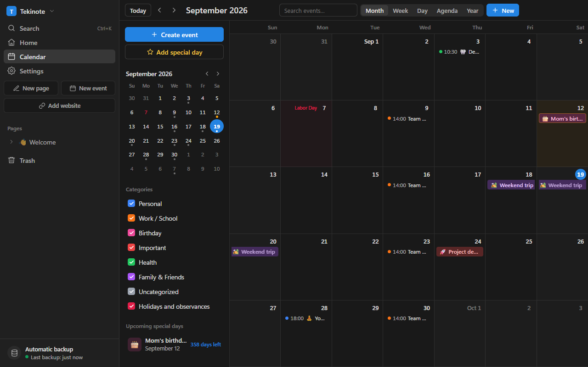
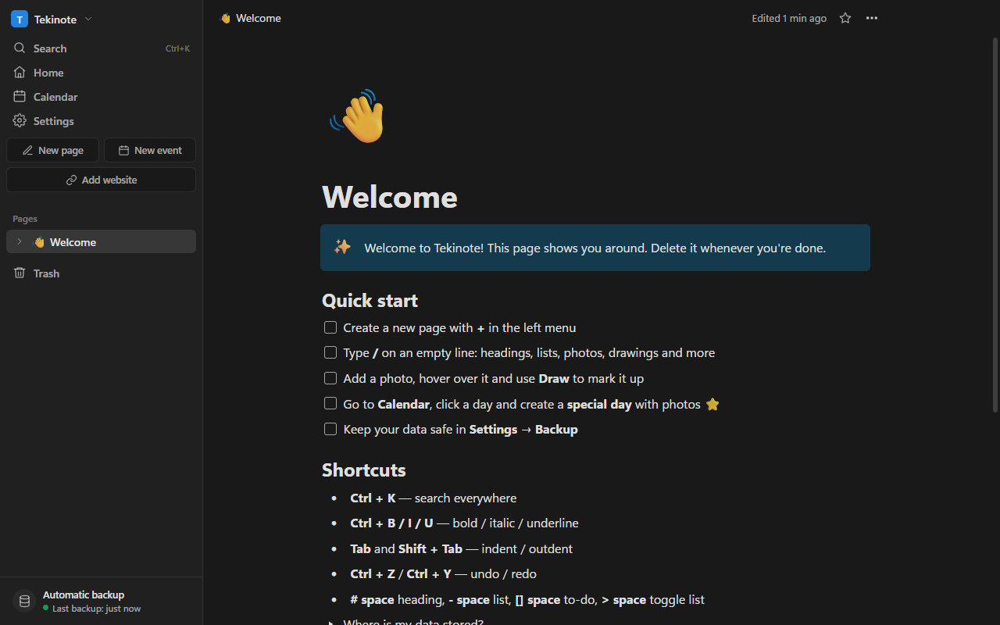

Your notes, drawings and calendar
in one quiet place
A free Windows app for notes you can draw on, websites you can open right inside a page, password-locked pages, and a calendar that counts down to the days that matter.
Free · No account · Windows 10 and 11
Everything in one app
No accounts, no subscription, nothing uploaded anywhere.
Pages that get out of the way
Headings, lists, to-dos, toggles, quotes, code and colors — all from a / menu, with subpages as deep as you like.
Draw on your photos
Add a photo and mark it up with a pen, highlighter, arrows, shapes and text. Drawings are stored as vectors, so they stay sharp.
Websites inside your notes
Paste a link and the site opens as a subpage. Browse it without leaving the app — and draw on top of it; your marks scroll with the page.
Pages only you can open
Lock a page with a password. Its text, photos and drawings are encrypted with PBKDF2 + AES-256-GCM. No password, no way in — not even for us.
A calendar for real life
Month, week, day, agenda and year views, recurring events, reminders, categories, and public holidays for the US and Turkey.
Special days with a countdown
Birthdays and anniversaries with photos, counting down on your home screen so you never notice them a day late.
Backups that survive a dead PC
Tekinote backs everything up to a folder you choose — a USB drive, another disk, or your Drive/OneDrive folder. Optionally encrypted.
Share a page
Send a page — with its subpages, photos and drawings — as a single file. The other side imports it in one click.
English and Turkish
The whole app, including dates and holidays, switches language in Settings. More languages are on the way.
Your notes stay yours
Tekinote is local-first. Everything lives on your own computer; nothing is sent to a server, because there is no server.
- No account and no sign-up — install and start writing.
- Locked pages are encrypted on disk, so a stolen laptop is not a leaked diary.
- Automatic backups go wherever you point them.
- Updates arrive with one click, from a green button in the corner.


Made by one person
Tekinote is free and ad-free. If it earns a place on your desktop, a small donation keeps new features coming.